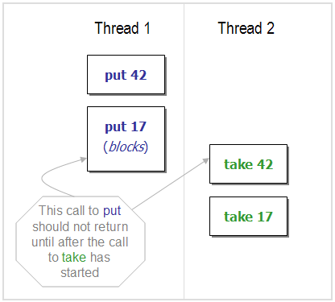
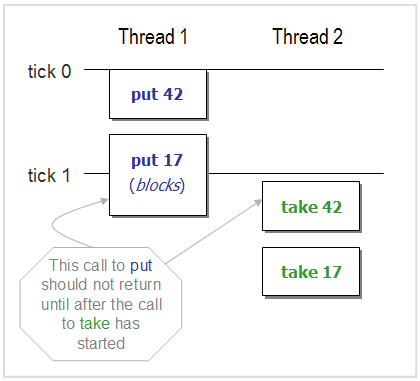

1. What is MultithreadedTC?
MultithreadedTC is a framework for testing concurrent applications. It features a metronome that is used to provide fine control over the sequence of activites in multiple threads.
(OK I think I get it. Take me straight to some examples.)
Many failures in concurrent applications are not deterministic. They do not occur every time. Different interleavings of application threads yield different behaviors.
Concurrent application designers often want to run many (unrelated or loosely related) threads of activity to maximize throughput. Sometimes it is useful for test designers to mimic this style and run multiple threads, generating as many interleavings as possible. Many test frameworks support this paradigm (e.g. IBM's ConTest, GroboUtils MultiThreadedTestRunner, and JUnit's ActiveTestSuite).
MultithreadedTC is different. It supports test cases that exercise a specific interleaving of threads. This is motivated by the principle that concurrent applications should be built using small concurrent abstractions such as bounded buffers, semaphores and latches. Separating the concurrency logic from the rest of the application logic in this way makes it easier to understand and test concurrent applications. Since these abstractions are small, it should be possible to deterministically test every (significant) interleaving in separate tests.
But how can one guarantee a specific interleaving of different threads in the
presence of blocking and timing issues? Consider the following example of some operations
on a bounded blocking buffer (e.g. ArrayBlockingQueue) with capacity 1:
|  |
We want a test to confirm that put 17 causes Thread 1 to block until
take 42 occurs in Thread 2. The
test must guarantee that take 42 does not occur until
after put 17. How could a designer guarantee this interleaving of
the two threads?
One approach is to use Thread.sleep() in Thread 2 to delay its first
statement long enough to "guarantee" that Thread 1 has blocked. But this
approach makes the test timing-dependent ― timing can be thrown off by, say, an
ill-timed garbage collector. This also does not work well when stepping through
the code in a debugger.
Another common approach for coordinating activities in two threads is to use
a CountDownLatch. A CountDownLatch will not work in this example as illustrated
by the following pseudocode:
| Initialize Block | |
ArrayBlockingQueue buf = new ArrayBlockingQueue(1);
|
|
| Thread 1 | Thread 2 |
buf.put(42);
|
c.await();
|
Of course the problem is that the statement c.countDown() cannot be executed
until after Thread 1 unblocks... which will not occur until Thread 2 take()s. In
other words, this test is deadlocked!
MultithreadedTC provides an elegant solution to this problem, illustrated in the following example:
class MTCBoundedBufferTest extends MultithreadedTestCase { |
| This example is illustrated by the following diagram: |
|  |
Multithreaded has an internal metronome (or clock). But don't try and use it to set the tempo for your jazz band. The clock only advances to the next tick when all threads are blocked.
The clock starts at tick 0. In this example, the first statement in Thread 2,
waitForTick(1), makes it block until the clock reaches tick 1 before resuming.
Thread 1 is allowed to run freely in tick 0, until it blocks on the second put.
At this point, all threads are blocked, and the clock can advance to the next
tick.
In tick 1, the first take() in Thread 2 is executed, and this frees up Thread
1. The final statement in Thread 1 asserts that the clock is in tick 1, in
effect asserting that the thread blocked on the second put().
This approach does not deadlock like the CountDownLatch, and is more reliable
than Thread.sleep(). Some other high level observations are:
- The test is encapsulated in a class that extends
MultithreadedTestCase. Each of the threads is represented by a method whose name starts with "thread", returnsvoid,and has no arguments. Theinitialize()method is invoked first; then the thread methods are invoked simultaneously in different threads; finally thefinish()method is invoked when all threads have completed. - This test can be run using the following JUnit test:
This creates an instance of the test class and passes it to the
public void testMTCBoundedBuffer() throws Throwable {
TestFramework.runOnce( new MTCBoundedBufferTest() );
}TestFramework. TheTestFrameworkcreates the necessary threads, manages the metronome, and runs the test. - All the components of the test are represented using classes and methods, constructs that are recognizable to Java programmers.
- The framework handles exceptions thrown by any of the threads, and propagates them up to JUnit. This solves a problem with anonymous Threads, whose exceptions are not detected by JUnit without some extra scaffolding provided by the test designer. (See Examples 2 to 4).
- The clock is not necessarily incremented by units of one. When all threads
are blocked it advances to the next requested tick specified by a
waitForTick()method. If none of the threads are waiting for a tick, the test is declared to be in deadlock (unless one of the threads is in stateTIMED_WAITING).
2. So how does this work?
The class TestFramework, provides most of the scaffolding required to run MultithreadedTC tests. It uses reflection to identify all relevant methods in the test class, invokes them simultaneously in different threads. It regulates these threads using a separate clock thread.
The clock thread checks periodically to see if all threads are blocked. If
all threads are blocked and at least one is waiting for a tick, the clock thread
advances the clock to the next desired tick. The clock thread also detects
deadlock (when all threads are blocked, none are waiting for a tick, and none
are in state TIMED_WAITING), and can stop a test that is going on too long (a
thread is in state RUNNABLE for too long.)
The test threads are placed into a new thread group, and any threads created by these test cases will be placed in this thread group by default. All threads in the thread group will be considered by the clock thread when deciding whether to advance the clock, declare a deadlock, or stop a long-running test.
3. Cool! How do I use this?
MultithreadedTC tests are created by extending one of two classes:
- class
MultithreadedTestCaseextendsjunit.framework.Assertand provides the base functionality required all tests. (NOTE:MultithreadedTestCasedoes NOT extendjunit.framework.TestCase). A test using this class consists of:- an optional
initialize()method, - one or more "thread" methods which are invoked in different threads,
- an optional
finish()method that is run after all threads have completed.
MultithreadedTestCasesubclass, an additional JUnit test method is used to call one of the "run" methods inTestFramework. The run methods receive an instance of aMultithreadedTestCaseand test it in different ways. The primary run methods are:runOnce(MultithreadedTestCase)-- run a test sequence once.runManyTimes(MultithreadedTestCase, int)-- run a test sequence as many times as specified by the int parameter, until one of the test runs fails
- an optional
- class
MultithreadedTestextendsMultithreadedTestCaseand implementsjunit.framework.Test. So it can be added to ajunit.framework.TestSuiteand run directly. This class includes arunTest()method that calls:TestFramework.runOnce(this). To change the way a test is run, override therunTest()method. (MultithreadedTC provides a convencience method:TestFramework.buildTestSuite(...), that looks for inner-classes that implementjunit.framework.Testand builds aTestSuiteout of these classes.)
4. Some Examples of Test Cases
Example 1: Compare And Set
Here is a simple example to demonstrate the basic layout of a MultithreadedTC test. In this example, one thread stays in a while loop until its condition is met due to an action in another thread. Both threads are started simultaneously.
Notice that in the MultithreadedTC version, the AtomicInteger parameter is initialized in the initialize() method, not in a constructor. This is so that if the test is run many times (with TestFramework.runManyTimes(...)), a fresh instance of AtomicInteger is used each time.
This simple example demonstrates that MultithreadedTC takes care of much of the scaffolding work needed to set up and start a thread, and eliminates the need to join the thread before the test ends.
| MultithreadedTC Version |
class MTCCompareAndSet extends MultithreadedTest { |
| Plain Version |
public void testCompareAndSet() throws InterruptedException { |
Example 2: Interrupted Acquire
This example shows some of the strengths of MultithreadedTC. An acquire() on a Semaphore in one thread is expected to block, and throw an InterruptedException when interrupted by another thread.
The MultithreadedTC version can assert that the InterruptedException is not thrown until tick 1, which is when Thread 1 is interrupted. (So an implementation of acquire that unconditionally throws the exception may pass the plain version but will not pass the MultithreadedTC version.)
Notice also that an unchecked AssertionError (caused by the fail(...) statement in Thread 1) will cause the test to kill all threads and fail immediately. In the plain version, this failure kills the auxillary thread but not the test. Some extra work is needed to set a flag indicating thread failure, and assert the flag in JUnit's tearDown() method.
| MultithreadedTC Version |
class MTCInterruptedAcquire extends MultithreadedTestCase { |
| Plain Version |
volatile boolean threadFailed; |
MultithreadedTC provides some convenience methods for getting access to a thread. The call to getThread(n) returns a reference to the thread running the method threadn() where n is an integer. The more general method, getThreadByName(threadMethod) returns a reference to the thread running the method threadMethod(). So getThread(1) is equivalent to getThreadByName("thread1").
Example 3: Thread Ordering
Most of the time, waitForTick() is used to wait until another thread blocks, as in Example 2. Occasionally though, it is useful for coordinating two or more threads that do not contain any blocking. This example shows that even though, the same can be accomplished using CountDownLatchs, the MultithreadedTC version using waitForTick() is easier to write and understand.
| MultithreadedTC Version |
class MTCThreadOrdering extends MultithreadedTestCase { |
| CountDownLatch version |
volatile boolean threadFailed; |
Example 4: Allowing Timeouts
In this test, the first offer is allowed to timeout, the second offer is interrupted. Use `freezeClock` to prevent the clock from advancing during the first offer.
| MultithreadedTC Version |
class MTCTimedOffer extends MultithreadedTestCase { |
| Plain Version |
volatile boolean threadFailed; |